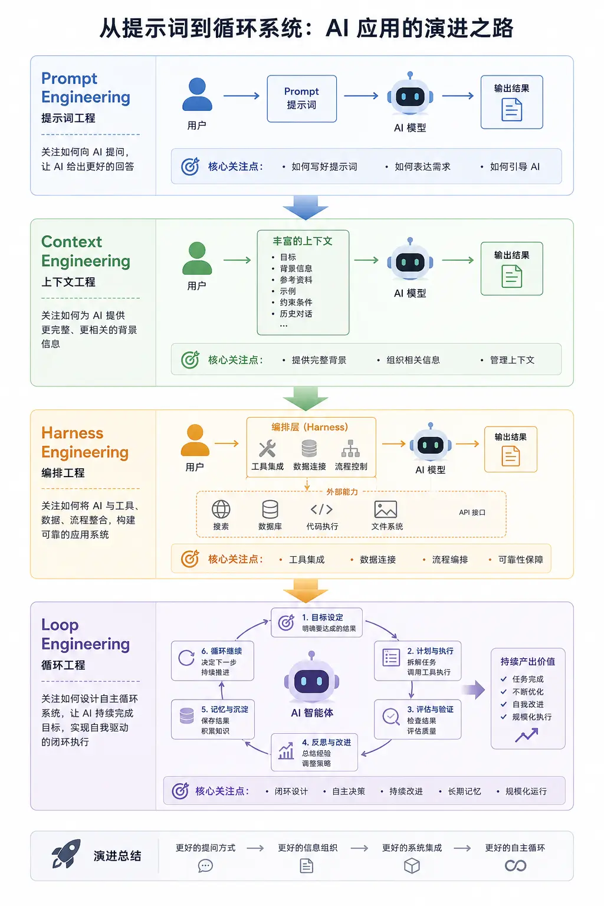
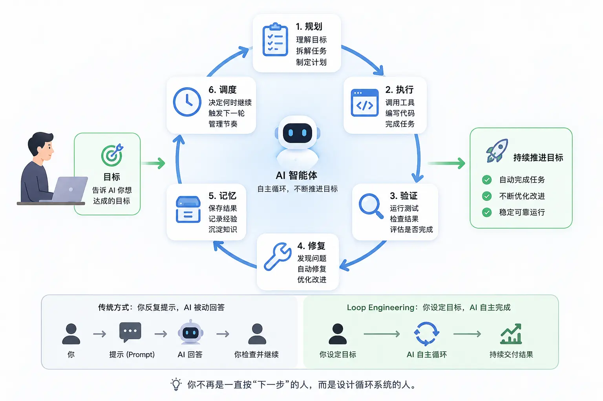

Loop Engineering（ループエンジニアリング）
Loop Engineering（ループエンジニアリング）は、2026年6月にAIプログラミングコミュニティで急速に広まった新しい概念であり、GoogleのエンジニアAddy Osmaniが体系的に整理し、AnthropicのClaude Code責任者Boris Chernyと開発者Peter Steinbergerがそれぞれ公の場で同じ見解を示したものである。
本記事では、Loop Engineeringとは何か、Prompt Engineeringとの本質的な違い、完全なAgent Loopを構成する6つの要素、そして自分自身の最初の実行可能なLoopを設計する方法について、ゼロから理解できるように解説する。
AIエンジニアリングの進化の過程
過去2年間、AI開発の焦点は絶えず変化している：優れたプロンプト（Prompt）の書き方を研究することから、コンテキスト（Context）の整理、ツールとプロセスのオーケストレーション（Harness）へと段階的に発展し、さらに自律的に実行して成果を継続的に届けるループシステム（Loop）の構築へと至っている。
Prompt：怎么问 AI ↓ Context：给 AI 什么信息 ↓ Harness：如何组织 AI 的能力 ↓ Loop：如何让 AI 持续创造结果

| エンジニアリング段階 | 中核となる考え方 | 注力ポイント | 入力内容 | AIの能力 | 人間の役割 | 典型的なシナリオ |
|---|---|---|---|---|---|---|
| Prompt Engineering（プロンプトエンジニアリング） | プロンプトを設計することでより良い出力を得る | どのように質問するか | プロンプト / 指示 | 単一ターンの生成 | 質問者 | チャット、執筆、コード生成 |
| Context Engineering（コンテキストエンジニアリング） | 完全な背景情報を整理して提供する | AIにどのような情報を与えるか | ナレッジベース、履歴、制約条件、コンテキスト | コンテキスト理解 | 情報の組織化者 | RAG、AI検索、コードアシスタント |
| Harness Engineering（ハーネスエンジニアリング） | モデル、ツール、データを接続してワークフローを形成する | どのように能力を呼び出すか | コンテキスト + API + ツールチェーン | タスクを実行する | システム設計者 | Agent、自動化プロセス、複数ツールの連携 |
| Loop Engineering（ループエンジニアリング） | 目標駆動型の自律クローズドループシステムを構築する | 目標を継続的に達成する方法 | 目標、状態、記憶、検証メカニズム | 計画 → 実行 → 検証 → 修正 → 継続稼働 | ルール制定者 | Claude Code、AIプログラミング、自動運用、AI社員 |
Loop Engineeringの起源
Loop Engineeringの登場には明確な時間的節目がある：2026年6月だ。
発火点：2つの言葉、100万回のリツイート
2026年6月初旬、AnthropicのClaude Code責任者Boris Chernyが公開講演で次のように述べた：
"I don't prompt Claude anymore. I have loops running. They're the ones prompting Claude and figuring out what to do. My job is to write loops."
（私はもうClaudeに直接プロンプトを送っていない。私には一連のLoopが稼働していて、それらがClaudeにプロンプトを送り、次に何をすべきかを決定している。私の仕事はLoopを書くことだ。）
数日後の2026年6月7日、開発者Peter Steinberger——オープンソースAI AgentプロジェクトOpenClaw（GitHub史上最も速くスターを獲得した新リポジトリ）の作者——が十二文字のツイートを投稿した：
"You shouldn't be prompting coding agents anymore. You should be designing loops that prompt your agents."
（もうAIプログラミングアシスタントに手動でプロンプトを送るべきではない。Agentが自分自身にプロンプトを送るLoopを設計すべきだ。）
- Prompt Engineering「AIにやり方を教える」ことだ
- Loop Engineering「AIが自ら継続的に取り組むシステムを設計する」ことだ

この2つの言葉はAI開発者コミュニティで大きな議論を巻き起こした。なぜなら、それらは多くの人がすでに感じていたもののまだ名前が付けられていなかったトレンドを的確に言い表していたからだ：プロンプトの良し悪しはもはやボトルネックではない。ボトルネックは、Agentのために設計する実行システム一式にある。
その後、Addy OsmaniがSubstackで長文を発表し、この実践を正式に命名して体系化し、Loop Engineeringそれを独立したエンジニアリング分野にした。
背景：AIプログラミングツールの3世代の進化
Loop Engineeringは何もないところから生まれたわけではない。それはAIプログラミングツールの能力進化の自然な結果である。
| 段階 | 代表ツール | 動作方式 | ボトルネック |
|---|---|---|---|
| 第一世代：自動補完 | GitHub Copilotの初期バージョン | 現在の行や関数を補完し、人間がすべての意思決定を主導する | 補助のみで自律はできない |
| 第二世代：対話型 | ChatGPT、Claude.ai | 1問1答で、人間が手動で各ステップを進める | 人間がボトルネックとなり、速度はタイピング速度に制限される |
| 第三世代：Agent自律ループ | Claude Code、OpenAI Codex Agent | Agentが自律的に計画、実行、検証を行い、完了するまで反復を続ける | Loopを確実に稼働させるシステムをどう設計するか |
第三世代ツールの登場は、エンジニアの中核的競争力がプロンプトを書けることからLoopを設計できることへと移行したことを意味する。
Loop Engineeringとは何か
Loop Engineeringとは、AIプログラミングAgentが計画の立案、コード修正の実行、結果の観察を自律的に行い、複数回の反復を通じてタスクを完了できるようにするフィードバックループを設計・運用し、継続的に改善するエンジニアリング実践である。
一言で言うなら：
Loop Engineeringとは、"Agentにプロンプトを送る人"から、"Agentにプロンプトを送るシステムを設計するエンジニア"へとあなたを変えるものである。
Loop（ループ）とは何か
Loopとは再帰的な目標システムである：目的を定義すると、Agentは作業が完全に完了するまで反復し続ける。
各Agentはタスク実行時にすでに"内側ループ"を内蔵している：知覚（Perceive）→ 推論（Reason）→ 行動（Act）→ 観察（Observe）、そして再びループする。
Loop Engineeringはこの内側ループの上位層で機能する：
| 階層 | 誰が駆動するか | 何をするか |
|---|---|---|
| 内側ループ（Agent内蔵） | Agent自身 | ファイルを読む → コードを修正する → テストを実行する → エラーを読む → 再修正する |
| 外側ループ（あなたが設計する） | あなたが設計するシステム | 計画に従ってタスクを発見 → Agentを派遣 → 結果を検証 → 状態を記録 → 次のラウンドを開始 |
あなたはもうAgentの隣に座って、各ステップごとに指示を打ち込むことはない。あなたが設計しているのは外部システムであり、それがあなたの代わりに内側ループを駆動し、あなたはより判断価値の高いことを行う。
Loop EngineeringとPrompt Engineeringの違い
| 次元 | Prompt Engineering | Loop Engineering |
|---|---|---|
| 最適化の対象 | あなたが手書きする単一の指示 | 「何を提示するか、いつ提示するか、結果が受け入れ可能か」を自動的に決定するシステム一式 |
| 作業単位 | あなたが手動で入力する1回の会話ターン | 複数のターンにまたがり、自動実行される完全なワークフロー |
| 成功の評価基準 | 最初の応答の品質 | 最終出力の結果の品質 |
| 失敗モード | モデルが質の悪い回答を出した | システムのLoop設計が不良：ループが早すぎる段階で停止する、エラーシグナルを無視する、完了を検証できない |
| Agentに対する視点 | あなたが手にするツール | あなたがスケジューリングする長期実行プロセス |

Prompt Engineeringは消滅していない。Loopは複数のPromptで構成されており、質の悪いPromptをLoopに入れると、悪い成果物がより速いスピードで産出されるだけである。Loop EngineeringはPrompt Engineeringの上の階層であり、それを代替するものではない。
3つの階層からなる完全な技術スタック：
| 階層 | 最適化するもの | 作業単位 |
|---|---|---|
| Prompt Engineering | 1つの指示をどのように表現するか | あなたが手動で入力する1回の会話 |
| Context Engineering | コンテキストウィンドウに何を入れるか：ドキュメント、履歴、ツール定義 | 1回の回答を取り巻く環境条件 |
| Loop Engineering | 何を提示するか、いつ提示するか、結果が受け入れ可能かを決定する自動実行システム | 複数の内側ループにまたがる自動ワークフロー |
Loopのコアループ
Agent Loopの基本構造は5つのフェーズで構成され、それらは前後がつながり、絶えず反復する。
| フェーズ | 英語名 | 何をするか | 典型的なシグナルソース |
|---|---|---|---|
| 意図 | Intent | 目標結果を定義する：成功とはどのようなものか、制約とは何か | 開発者または外部システム（Issue、CIレポート） |
| コンテキスト | Context | 関連するコード、ドキュメント、エラーログ、規約を収集する | コードベース、テスト出力、過去の会話 |
| 行動 | Action | ファイルを編集、コマンドを実行、ツールを呼び出し、修正案を起草 | Agentが自律的に実行する |
| 観察 | Observation | テスト結果、コンパイルエラー、ランタイム出力、コードDiffを取得する | テストフレームワーク、型チェック、CI、人間によるレビュー |
| 調整 | Adjustment | 観察に基づいて計画を更新し、タスクが完了するかブロックされるまでループを繰り返す | 次の内側ループ |
Loopの力は単独のステップにあるのではなく、閉ループにある。テスト失敗は単なるエラーメッセージではなく、それは新しいコンテキストである。型エラーは単なるブロックではなく、誤った仮定に関するシグナルである。Code Reviewのコメントは単なるフィードバックではなく、次の行動を駆動する新しい観察である。
6つの構成要素
真に独立して実行できるLoopには、5つのコアコンポーネントに加えて、全体を貫く記憶システムが必要であり、どれも欠かせない。
要素1：自動トリガー（Automations）
自動トリガーはLoopの心臓部である。自動トリガーがなければ、Loopは「あなたが一度だけ行う操作」に過ぎず、本当の意味でのループではない。
トリガーは以下を定義する：いつ？何をするか？
Claude Codeでは、次のコマンドを使用して/loop定期トリガーのLoopを作成します：
実例
# 発見内容をTODO.mdに書き込み、quick-winとマークされた問題の修正案を起草する
/loop "Read yesterday's CI failures and open issues, write findings \
to TODO.md, and draft fixes for anything labeled quick-win" \
--schedule "0 9 * * 1-5"
# /goal：検証可能な条件が成立するまで実行
# 以下のコマンドは、認証モジュールのすべてのテストが成功し、lintがクリーンになるまで実行を継続します
/goal "All tests in test/auth pass and lint is clean"
OpenAI Codexでは、Automationsに専用のUIパネルがあり、プロジェクト、Prompt、リズム（cadence）、ローカルチェックアウトとバックグラウンドのWorktreeのどちらで実行するかを設定できる。発見内容のある実行はTriage受信トレイに入り、発見内容のないものは自動的にアーカイブされる。
Tokenコスト警告：検証用サブAgent付きの定期Loopは、トリガーされるたびにTokenを消費し、その消費量はタスクの複雑さによって大きく変動する。まずは遅いリズム（例：1日1回）に設定し、数日間コストを観察してから頻度を上げることを推奨する。
要素2：並列分離（Worktrees）
複数のAgentを同時に実行する場合、ファイル競合が最も問題になりやすい箇所だ。2つのAgentが同時に同じファイルに書き込むことは、2人のエンジニアが同時に同じコード行にコミットするようなもので、結果は壊滅的である。
Git Worktreeが解決策である：各Agentに独立した作業ディレクトリを提供し、それぞれ独立したブランチ上で操作し、同じGit履歴を共有するが、ファイルの変更は完全に分離される。
実例
git worktree add ../agent-fix-auth feature/fix-auth-tests
git worktree add ../agent-upgrade-deps feature/upgrade-axios
# Claude Codeで、サブAgentにworktree分離を設定する
# .claude/agents/reviewer.md のfrontmatterに追加：
# isolation: worktree → 各Agentが独立したチェックアウトを取得し、完了後に自動クリーンアップされる
Worktreeは機械的なファイル競合を排除するが、排除できないのはレビューのボトルネックである。コード変更を処理し承認するあなたの速度こそが、並行して実行できるAgentの数の真の上限を決定するのであり、ツールが開けるWorktreeの数ではない。
要素3：スキルファイル（Skills）
Skills（スキルファイル）が解決するのは、毎回浪費されているコストである：新しい会話のたびに、Agentはゼロからあなたのプロジェクト規約を推測しなければならない。
Skillは、以下のSKILL.mdファイルを含むフォルダであり、プロジェクトの規約、ビルド手順、「あの事故のせいで私たちはこれをしない」といった知識が記述されている。Agentは各セッションの開始時にSkillをロードし、毎回推測し直すことはない。
実例
---
name: project-conventions
description: プロジェクトのコーディング規約とビルド手順。コードの変更を伴うタスクはすべてこのスキルをロードすること。
---
## 技術スタック
- バックエンド：Node.js20 + TypeScript 5.4 + Fastify
- データベース：PostgreSQL16、ORMはDrizzleを使用
- テスト：Vitest、テストファイルは src/ と同じ階層の __tests__/ に配置
## ビルドコマンド
- 依存関係のインストール：pnpm install
- テストの実行：pnpm test
- 型チェック：pnpm typecheck
- ビルド成果物：pnpm build
## コア規約
- すべてのデータベースクエリは src/db/queries/ 内のラッパー関数を経由すること。ビジネス層での直接のSQL記述は禁止
- エラーは一律にAppErrorクラス（src/errors/AppError.ts）を使用すること。裸の文字列のthrowは禁止
- APIルートファイルの命名：{resource}.routes.tsとし、src/routes/に配置
- 新しいAPIを追加する場合は docs/api.md も同時に更新すること
## 禁止事項
- migrations/ ディレクトリ内の履歴マイグレーションファイルを直接変更してはならない
- .env ファイルに実際のシークレットをコミットしてはならない。.env.example をプレースホルダーとして使用すること
要素4：コネクタ（Connectors / MCP）
ローカルファイルシステムしか見えないLoopができることは非常に限られている。コネクタ（MCP——Model Context Protocolに基づく）により、AgentはIssueトラッカーの読み取り、データベースへのクエリ実行、APIの呼び出し、Slackでのメッセージ送信が可能になる。
これが「Agentが『こちらが修正案です』と言う」ことと、「Loopが自動的にPRを作成し、Ticketを関連付け、CI通過後にチャンネルへ通知する」こととの間の核心的な違いである。
Claude Code と OpenAI Codex はどちらも MCP プロトコルをネイティブにサポートしており、あるツール用に書かれたコネクタは通常、両方でそのまま使用できます。
実例：Claude CodeでMCPコネクタを設定する
// MCP コネクタを構成し、Agent が GitHub を操作して Slack 通知を送信できるようにする
{
"connectors": [
{
"name": "github",
"command": "npx",
"args": ["-y", "@modelcontextprotocol/server-github"],
"env": {
"GITHUB_TOKEN": "${GITHUB_TOKEN}"
}
},
{
"name": "slack",
"command": "npx",
"args": ["-y", "@modelcontextprotocol/server-slack"],
"env": {
"SLACK_BOT_TOKEN": "${SLACK_BOT_TOKEN}"
}
}
]
}
Agent にコネクタを接続するということは、実際の環境で実際のアクションを実行できることを意味します。各コネクタには最小権限を設定する必要があり、高リスク操作（コードのプッシュ、PR のマージ、外部通知の送信）は人間の承認を要求し、全自動で実行してはいけません。
要素5：サブエージェント（Sub-Agents）
ループにおける最も重要なアーキテクチャ上の決定の1つ：コードを書く Agent とコードをチェックする Agent を分離する。
コードを書いたモデルは、自分の作業を評価する際に甘くなりすぎます。異なる指示を持つ独立したチェッカー（場合によっては異なるモデルを使用）は、最初の Agent が辻褄を合わせて見逃した問題を捉えることができます。
この「メーカー・チェッカー」（Maker-Checker）パターンは、ループの停止条件にも適用されています：Claude Code の/goalコマンドは毎回のイテレーション後に、作業を行ったモデルではなく、別のモデルを使って「完了」かどうかを判断します。
実例：チェッカー役サブエージェントを定義する
---
name: spec-reviewer
description: 完了したコード変更に対して敵対的レビューを行い、仕様とテスト要件を満たしているか検証します。
model: opus # より強力なモデルを検証者として使用する
isolation: worktree # 独立してチェックアウトし、製作者のワークスペースを汚染しないようにする
---
あなたは敵対的コードレビュアーです。あなたの仕事は承認ではなく、疑いをかけることです。
diff を受け取ったら、次のことを行います：
1. 完全なテストスイートを実行する（pnpm test）、失敗項目を記録する
2. 型チェックを実行する（pnpm typecheck）
3. SKILL.md のプロジェクト仕様と照合して diff を確認する
4. ユーザーに見える動作の変更が元の要件に適合しているか検証する
すべてのテストが合格し、型チェックがクリーンで、仕様違反がない場合にのみ、APPROVED と出力します。
それ以外の場合は具体的な拒否理由を出力し、曖昧な評価を出さないでください。
要素6：永続メモリ（Memory）
メモリは、会話をまたいで継続的に実行できるすべてのループの中核となる柱です。
モデルは会話のたびに完全に忘れてしまいます。外部メモリがなければ、ループが起動するたびに Agent はゼロから始まり、昨日何をしたか、どの修正がマージされたか、どのタスクがまだ未完了かを知りません。
解決策は極めてシンプルです：状態をファイルに書き、ファイルをリポジトリに置く。リポジトリは覚えています。たとえモデルが覚えていなくても。
実例：Loop状態ファイル
# ループタスクの状態
最終更新：2026-06-1409:03 UTC（自動ループにより更新）
## 進行中
- [ ]test/auth/login.spec.ts の flaky test（CI Run#4821、失敗 3 回）
- 仮説：並行テスト間のセッション状態のリーク
- 試したこと：テストデータベース接続の分離 → 効果なし
- 次のステップ：beforeEach の cleanup ロジックを確認
## 未処理
- [ ]axios を1.7.x にアップグレード（セキュリティ脆弱性 CVE-2026-xxxxx）
- [ ]API ドキュメントの更新（PR#308 のマージ後にコードから取り残されている）
## 完了済み
- [x]billing モジュールの単一引用符を含む会社名による500エラーの修正（PR#312、マージ済み）
- [x]Node.js のバージョンを20.x（PR #307、マージ済み）
5つの一般的なLoopパターン
さまざまな種類の作業タスクには異なるフィードバック信号と停止条件が必要であるため、いくつかの古典的なループパターンが発展してきました。
| パターン | コア観測シグナル | 停止条件 | 典型的なシナリオ |
|---|---|---|---|
| テスト駆動ループ | テストの合格/失敗 | 対象テストがすべて合格 | バグ修正、回帰テスト、データ変換ロジック |
| コンパイラ駆動ループ | 型エラー、コンパイルエラーのリスト | 型チェックでエラーゼロ | TypeScript 移行、依存関係のアップグレード、リファクタリング |
| レビュー駆動ループ | 人間のレビューコメント | すべてのコメントが対処されるか、根拠を明記して無視される | PR レビューの機械的なフォローアップ |
| ランタイムデバッグループ | ログ、スタックトレース、HTTP レスポンス | 問題を再現 → 仮説を立てる → 修正を検証 | 本番バグ、パフォーマンス問題、API の異常 |
| プロダクトイテレーションループ | スクリーンショット、ブラウザチェック、アクセシビリティレポート | デザインとの整合、レスポンシブが正常、仕様違反なし | ランディングページ、UI 調整、マーケティングコンポーネント |
最初のLoopを構築する
最初から全自動・マルチエージェント・PR 自動マージの複雑なループを構築しようとしないでください。最小限の実用的なループから始め、その動作を理解してから段階的に拡張してください。
ステップ1：狭いタスクから始める
タスクが狭いほど、Agent はどのファイルが重要で、どの検証シグナルが関連するかを明確に把握できます。
| 良くないタスク定義 | 良いタスク定義 |
|---|---|
| 「ダッシュボードのパフォーマンスを最適化する」 | 「非重要チャートの読み込みを遅延させ、既存のフィルターを正常に動作させたまま、ダッシュボードの初回読み込み時間を 30% 削減する」 |
| 「チェックアウトの問題を修正する」 | 「test/checkout/tax.spec.ts の失敗している税額計算テストを修正する」 |
| 「設定ページを改善する」 | 「アカウント削除ボタンがモバイル（375px 幅）で切り捨てられるレイアウト問題を修正する」 |
ステップ2：検証方法を明確に伝える
ループは「完了」が何を意味するかを知る必要があります。検証コマンドを知っているなら、それを指示に直接書き込みます。
実例：検証条件付きのLoop指示
/goal "Fix the auth bug"
# 良い例：具体的な検証コマンドと成功基準がある
/goal "Fix the session leak causing flaky tests in test/auth/login.spec.ts.
Success condition: run 'pnpm test test/auth/login.spec.ts' 5 times
consecutively with zero failures. Do not touch other test files."
ステップ3：安全装置を設定する
ループが自動的に PR を作成できるようになる前に、まずファイルへの書き込みのみ行い外部操作は一切行わせず、あなたが diff をレビューしてコミットするかどうかを決定します。
実例：毎日のCI障害分類Loop（最小安全版）
# - 読み取り専用操作（CI ログの読み取り、Issues の読み取り）
# - TODO.md のみ書き込む（他のファイルには触れない）
# - PR を作成しない、コードをマージしない
# - 毎朝 TODO.md を確認し、次のステップを手動で決定する
/loop "Read yesterday's CI failure logs and GitHub Issues labeled 'bug'.
Categorize findings by likely cause.
Write a summary with prioritized action items to TODO.md.
Do NOT edit any source files. Do NOT open any PRs." \
--schedule "0 8 * * 1-5"
この最小バージョンのループはすでに非常に価値があります。毎朝、昨日の問題リストを整理してくれるので、出社して TODO.md を開けば、今日何をすべきかが分かります。30 分かけて CI ログを調べる必要はありません。これはループの動作を理解するための最良の出発点であり、リスクはほぼゼロです。
ステップ4：自律度を段階的に高める
| 段階 | ループができること | 人間が行うこと |
|---|---|---|
| 段階1（読み取り専用） | 問題の発見、タスクの分類、状態ファイルの書き込み | TODO.md をレビューし、処理順序を手動で決定 |
| 段階2（ドラフト） | 修正案の起草、テストの実行、ブランチへの書き込み | diff をレビューし、git push を手動実行 |
| 段階3（半自動） | Draft PR の作成、CI の実行、Slack への通知 | PR のレビュー、Merge を手動クリック |
| 段階4（全自動） | メーカー + チェッカーの二つの Agent、CI 合格後に自動マージ | 異常時は人間が介入し、マージ履歴を定期的に監査 |
Loop Engineeringの3つの大きなリスク
ループは働き方を変えますが、エンジニアの責任をなくすわけではありません。ループが良くなるにつれて、3つの問題はより容易になるどころか、より深刻になります。
リスク1：検証は依然としてあなたの責任である
無人監視で稼働するLoopは、無人監視でエラーを生み出すLoopでもある。チェッカーサブAgentを設置するのはリスクを下げる良い方法だが、「検証を通過した」というのは声明であって、証明ではない。
Loopがどれほど信頼できても、マージされたコードの人間によるレビューは決して廃止できない。
リスク2：理解負債（Comprehension Debt）がより速く蓄積する
Loopがコードを生み出す速度が速いほど、実際に理解しているコードの割合は低くなる。これはAIプログラミングだけの問題ではないが、Loopがそれを加速させている。
唯一の解毒剤は：Loopが生み出したコードを読むことだ。Loopが順調に動いているからといって、それが何をしているのか理解するのをやめてはいけない。
リスク3：認知降伏（Cognitive Surrender）
Loopが自動で稼働しているとき、それが返すどんな結果も受け入れるのが最も快適な選択だ。これはLoop Engineeringの最も潜在的な危険である。
二人がまったく同じLoopを構築しても、正反対の結果を得ることがある。一人は深い理解に基づいてより速く前進するために使い、もう一人は理解する作業そのものを回避するために使う。Loopはその違いを知らない。知っているのはあなただけだ。
4種類のLoop障害モードとその対処方法：
| 障害モード | 症状 | 根本原因 | 解決方法 |
|---|---|---|---|
| 空転（Thrashing） | Agentがコードを繰り返し修正するが、収束しない | 目標が不明確、または検証シグナルにノイズがある、または毎回の変更範囲が大きすぎる | 目標範囲を絞り、毎回のdiffサイズを小さくし、より信頼性の高い検証コマンドを使用する |
| テストへの過学習 | すべてのテストは通るが、機能は実際には間違っている | テストカバレッジが狭すぎ、実際のユーザーシナリオを検証していない | 自動テストと人間による受け入れチェックを組み合わせ、エンドツーエンドテストを増やす |
| コンテキストのドリフト | Agentが古い前提に基づいて作業を続け、新たに発生した変更を無視する | 重要な観察の後にコンテキストを更新していない | 重要な観察の後にコンテキストを再収集し、初期計画を神聖視しない |
| 安全でない自律性 | Agentが許可なく破壊的な操作を実行する | 権限範囲が広すぎ、明確な停止条件がない | 最小権限の原則、高リスク操作は必ず人間の承認が必要、明確な停止ルールを設定する |
ベストプラクティスのまとめ
以下は信頼性の高いLoopを構築するための核心的な原則であり、それぞれが一般的な失敗のタイプに対応している。
| 原則 | 具体的な実践 |
|---|---|
| 狭いタスクから始める | 毎回、明確な境界を持つ目標を一つだけ定義する。広範な目標では、Agentがどのファイルや検証シグナルが関連しているかを判断できない |
| Agentに検証方法を伝える | 指示の中に検証コマンドを直接明記する（pnpm test test/auth）、受け入れシナリオまたはAPIエンドポイントを明記し、「完了」を測定可能にする |
| 小さな可逆的な変更を好む | Agentに最小限の一貫した修正を行わせ、検証を実行してから拡張するよう要求する。大規模な推測的な書き換えでは、どの仮定に問題があったのか判断しにくい。 |
| 既存のコードパターンを尊重する | Agentにまず隣接する実装を確認させ、既存のコンポーネントを再利用し、既存の命名に従わせ、不要な新しい抽象化を導入しないようにする |
| 人間は判断の席を維持する | Agentは証拠収集と機械的な修正を担当し、製品判断、アーキテクチャ決定、最終レビューは人間に残しておく |
| 再利用可能なLoopを定着させる | あるLoopがうまく機能したとき、それをSkillファイルまたは標準化されたトリガーとして固定化し、将来の反復コストを下げる |
クリックしてメモを共有
<p style="font-size:14px;">メモは本記事の内容の拡張である必要があります！</p><br> <p style="font-size:12px;"><a href="../tougao.html" target="_blank">記事の投稿は、ここをクリック</a></p> <p style="font-size:14px;"><a href="../w3cnote/runoob-user-test-intro.html" target="_blank">登録招待コードの取得方法</a></p> <h3 class="text-muted"><i class="fa fa-info-circle" aria-hidden="true"></i> メモを共有する前に<a href=";.html" class="runoob-pop">ログイン</a>が必要です！</h3> <p><a href="../w3cnote/runoob-user-test-intro.html" target="_blank">登録招待コードの取得方法</a></p>